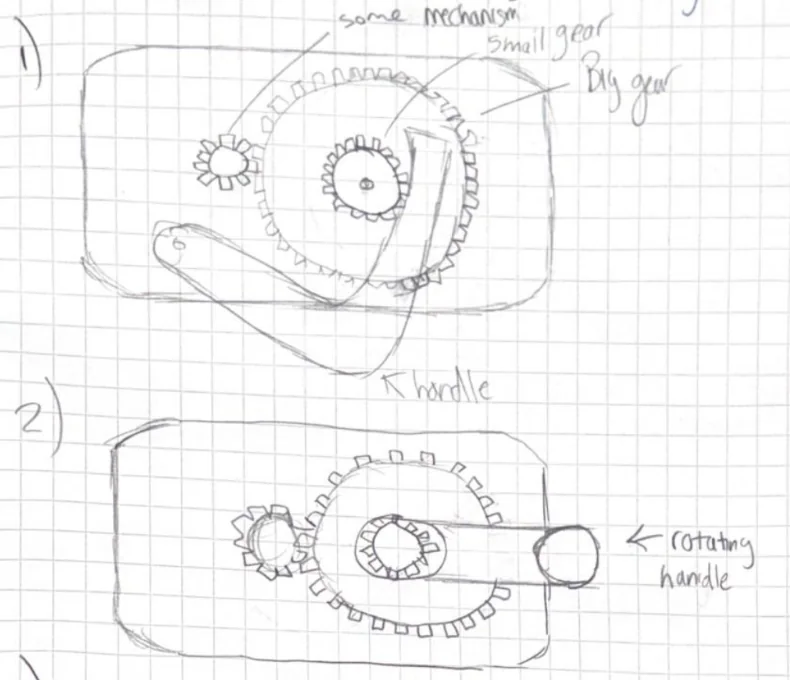
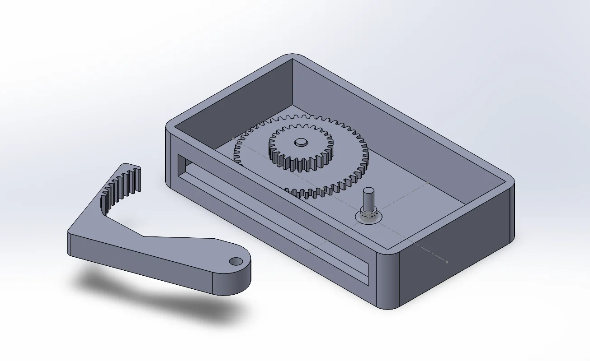
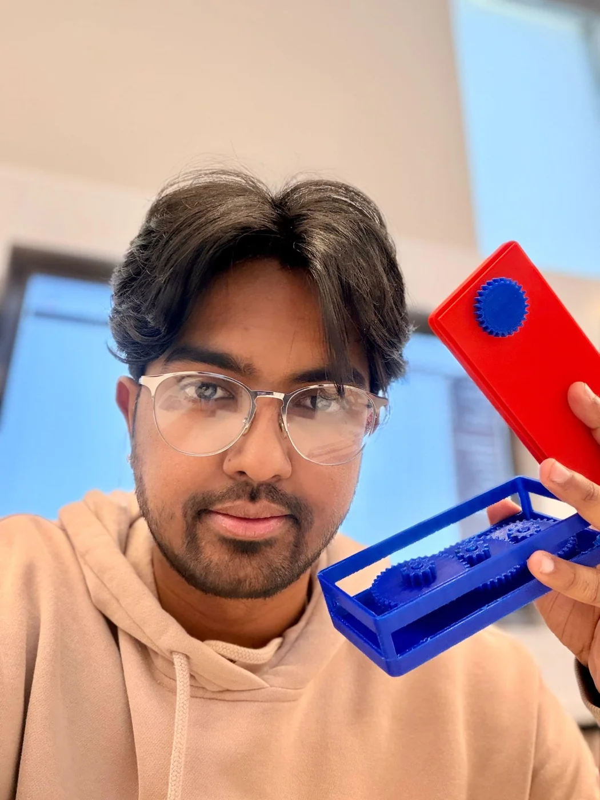
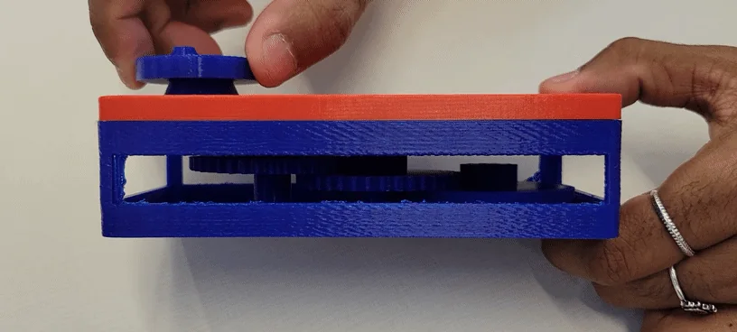

ME 347 · Mechanism design & prototyping
15:1 gear-ratio fidget.
A mechanical fidget developed through hand sketches, CAD iterations, and a 3D-printed prototype, with practical lessons about gear clearance and tooth engagement.
- My work
- Concept, CAD & prototype
- Design target
- 15:1 gear ratio
- Process
- Sketching · CAD · 3D printing
The idea
For ME 347, I designed a small mechanical fidget with a 15:1 gear-ratio target. A hand-operated input would drive the gears inside a compact rectangular housing. I took the idea through sketches and CAD concepts to a printed prototype.
Exploring the mechanism
The first sketches explored a lever arrangement and a rotating handle. I then developed CAD prototypes to work through the input mechanism and how the gears and housing would fit together.


The final prototype
The final design used a circular hand input and a series of gears inside the case. I printed and assembled the prototype to examine the actual fit and engagement between the components.


What testing revealed
The fit between gears was more sensitive than it first appeared in CAD. Clearances and alignment needed to be checked carefully before printing. When I applied too much force by hand, the small teeth of the drive gear skipped; a lighter input allowed the gears to remain engaged.
I identified more precise tolerances, better alignment checks, and larger drive-gear teeth as areas for a future revision. The 15:1 ratio describes the design target documented for the project.
What I learned
The printed prototype gave me specific feedback that a CAD view alone could not provide. It connected the arrangement of the parts to how the mechanism felt and behaved under hand input, and gave me a clear starting point for another iteration.